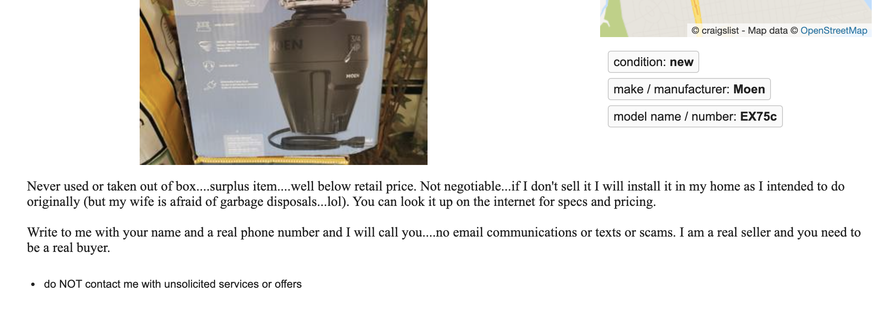
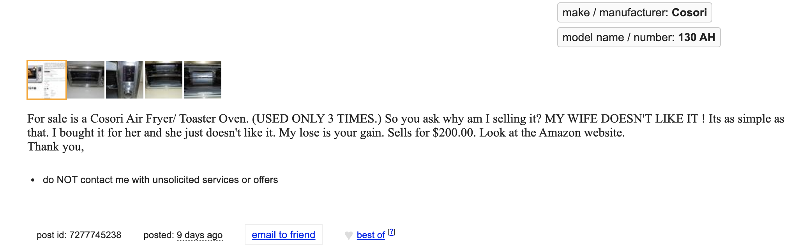
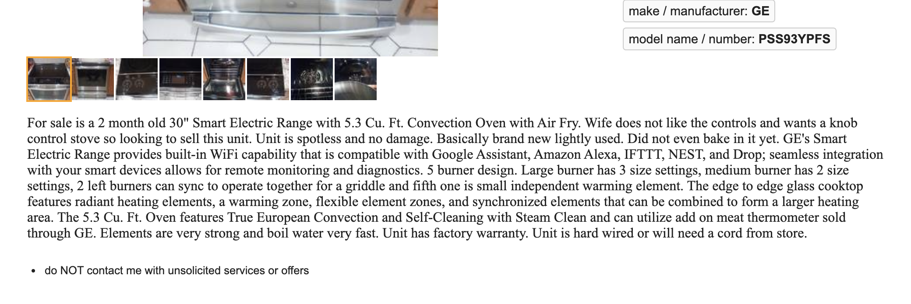
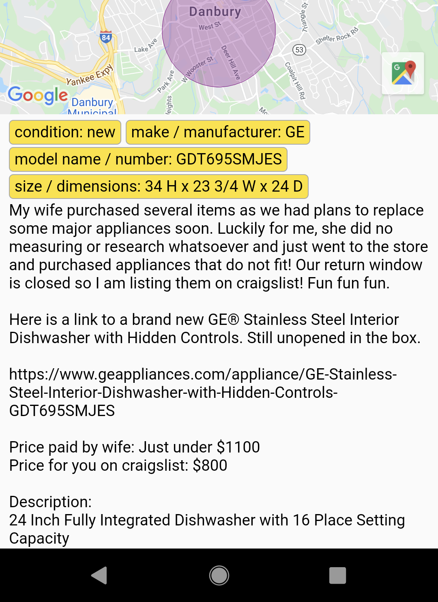
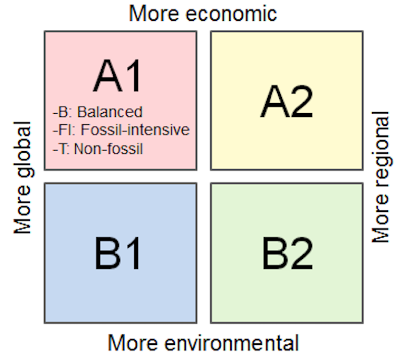
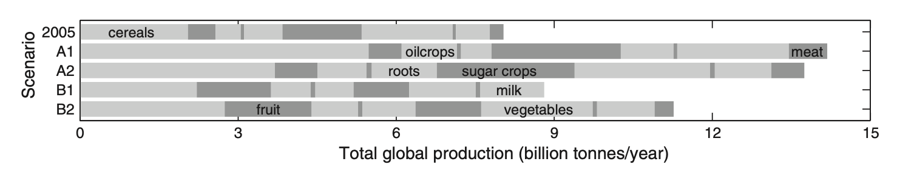
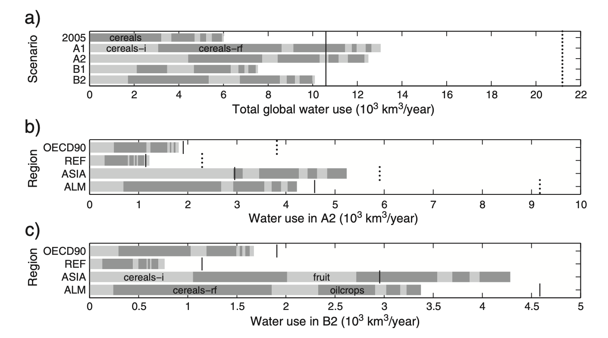
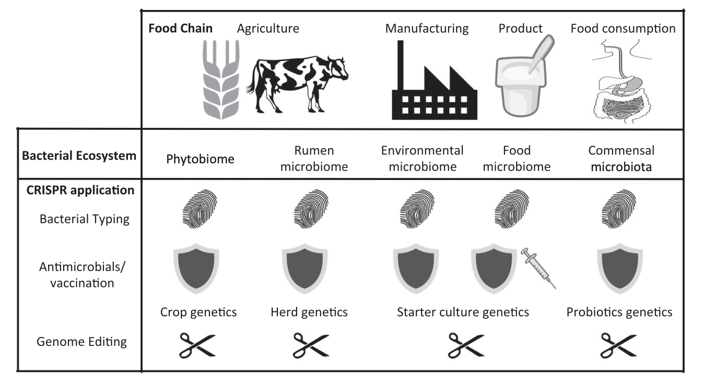

What is the number one problem with kitchen appliances?
?????
What is the number one problem with kitchen appliances?
wives
Wives!
Wives!!
Wives!!!
Wives!!!!
fin
facebook.com/hellomsg
#omgmsg
sarah
sarahlohman.com
@fourpoundsflour
Â
soma
brooklynbrainery.com
@dangerscarf
Our Future in Food
Axes from IPCC
Intergovernmental Panel on Climate Change
“Storylines”
Four views of the future
economy vs enviroment, global vs regional
A1 Affluent world 🤖
A2 Full world 🤼
B1 Vegetarian world 🥒
B2 Low-Input world 🛏️
from “The future of food — Scenarios and the effect on natural resource use in agriculture in 2050†by I.Y.R. Odegard, E. van der Voet
Virtual resource content
Land + Water + Fertilizer
Attainable yield
What has technology done for you recently?
Optimistic: 80%
Pessismitic: 20%
Water water everywhere
Cucumber: 42 gallons/lb
Lentils: 704
Beef: 1,800
Almonds: 1,900
Fertilizer
Nitrogen + Phosphorus + Potassium
🤖 The Affluent World 🤖
economy over environment, global over regional
Population growth: Low - 7.78b
Economic development: High - ~$30k
Tech: High + global
Diet: Western
Animal-based foods: 26% of diet
Household waste: Same as USA in 1995
Feedcrop yields: High
Foodcrop productivity: 80% closure of yield gap
🤼 The Full World 🤼
economy over environment, regional over global
Population growth: High - 9.9b
Economic development: Low - ~$10k
Tech: Slow + regional
Diet: Western
Animal-based foods: 22% of diet
Household waste: Half of USA in 1995
Feedcrop yields: Varied, some higher
Foodcrop productivity: 20% closure of yield gap
🥒 The Vegetarian World 🥒
environment over economy, global over regional
Population growth: Low - 7.78b
Economic development: Med-High - ~$20k
Tech: medium + global
Diet: Vegetarian
Animal-based foods: 9% of diet
Household waste: Half of USA in 1995
Feedcrop yields: Average
Foodcrop productivity: 80% closure of yield gap
🛏️ The Low-Input World 🛏️
environment over economy, regional over global
Population growth: Medium - 9.15b
Economic development: Medium - ~$15k
Tech: medium + regional
Diet: Reduced meat
Animal-based foods: 17% of diet
Household waste: Half of USA in 1995
Feedcrop yields: Average
Foodcrop productivity: 10% closure of yield gap
Change ourselves or change the world?
Can we/do we technologize ourselves out of our problems?
How much stuff?
An ugly chart of how much stuff
Land in 2050
Food land use
Water in 2050
Water use
Fertilizer in 2050 (and beyond)
Fertilizer use
Phosphorus crisis?
Remaining fertilizer
We are fucked
🤖 Affluent world water use, fertilizer use
🤼 Full world water use, fertilizer use
🥒 Vegetarian world life is perfect
🛏️ Low-input world land use
2014 vs 2021
Animal-free everythings
Precision fermentation
CRISPR
What can it be used for?
Precision fermentation
We can produce…
collagen and
gelatin and
egg protein and
heme protein and
milk protein and
human breast milk protein and so much more!
“By 2030, the US dairy and cattle industry will have collapsed”
By 2030
Who needs eggs?
Mass-produced protein destroys “real†protein
Ground beef: 70% decline
Steak: 30% decline
Dairy: 90% decline
Crop farming: 50% decline
By 2035, 60% of livestock + feed production land will be freed up
“This report would have you believe that in 11 short years we will be living in The Jetsons, with consumers massively adopting industrially developed, untested food-like products on their way to vegan fantasyland. In reality, US dairy is part of the sustainability solution: our greenhouse-gas emissions have fallen in absolute terms since 2005, and we have committed to further reductions.”
- National Milk Producers Federation
(North American Meat Institute did not respond to requests for comment)
Everything will go insane
More on the vegan fantasyland paper at rethinkx.com